黑潮档案局 Web 开发素材包 v0.3 anomaly_card 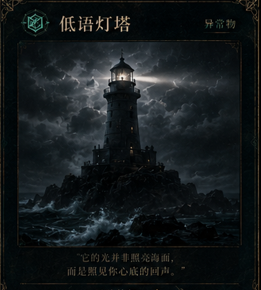
whispering_lighthouse378×420 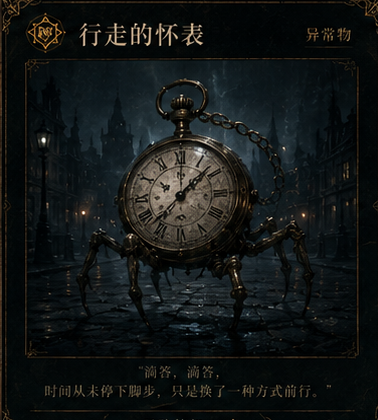
walking_pocket_watch378×420 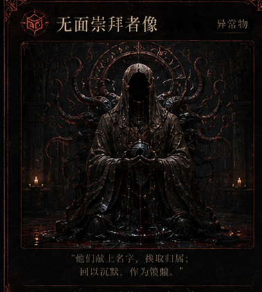
faceless_worshipper_statue378×420 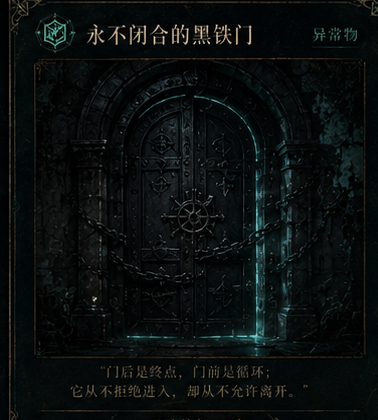
unclosed_black_iron_door378×420 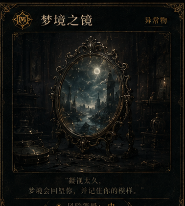
mirror_of_dreams378×420 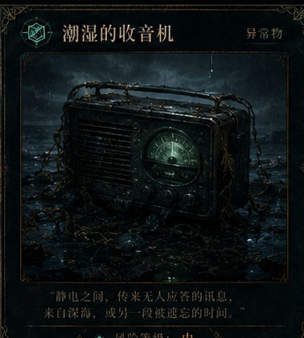
damp_radio378×420 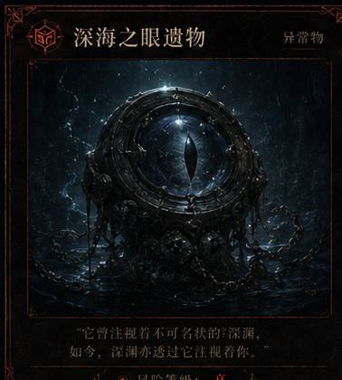
deep_eye_relic378×420 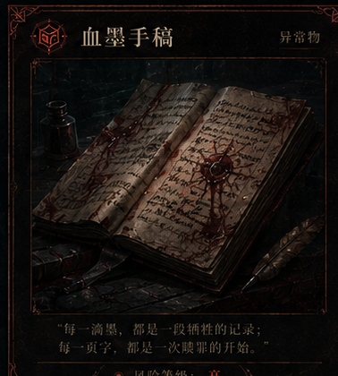
blood_ink_manuscript378×420 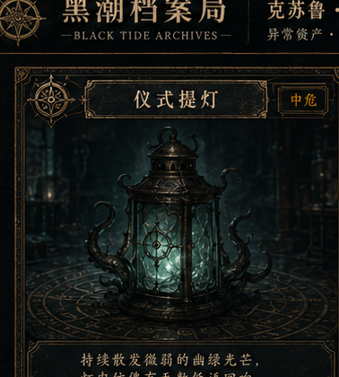
ritual_lantern378×420 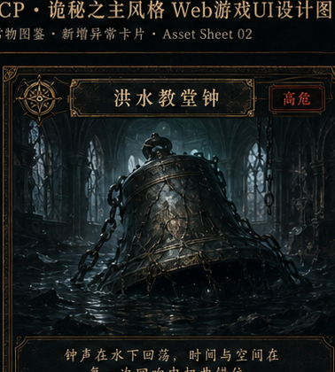
flooded_chapel_bell378×420 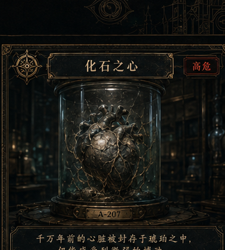
fossilized_heart378×420 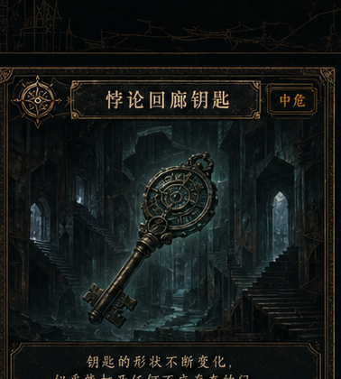
key_of_returning_corridor378×420 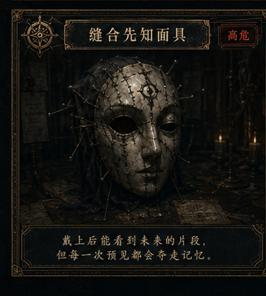
stitched_knowledge_mask378×420 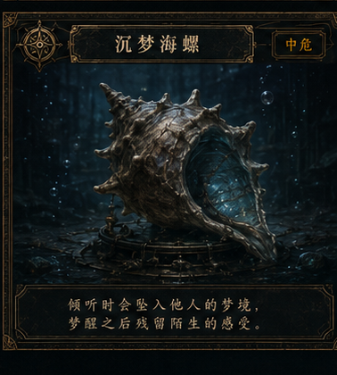
sunken_dream_conch378×420 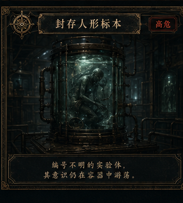
sealed_humanoid_specimen378×420 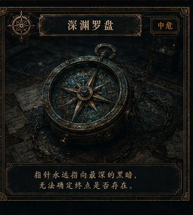
abyss_compass378×420 anomaly_card_art 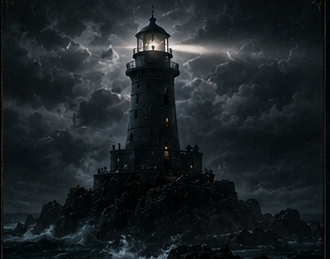
whispering_lighthouse art330×259 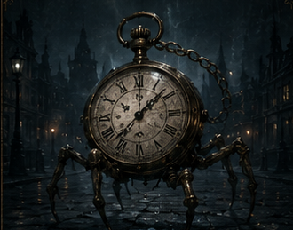
walking_pocket_watch art330×259 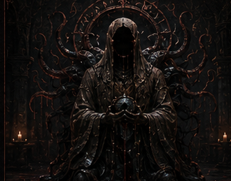
faceless_worshipper_statue art330×259 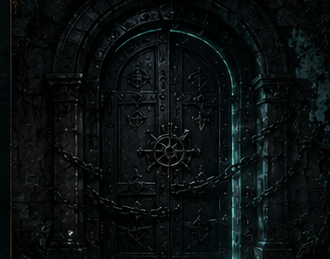
unclosed_black_iron_door art330×259 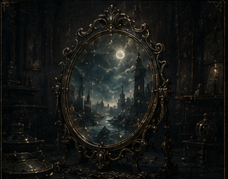
mirror_of_dreams art330×259 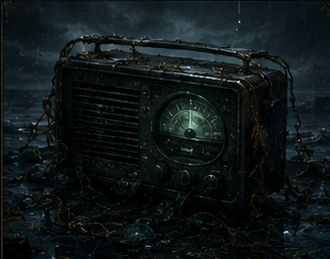
damp_radio art330×259 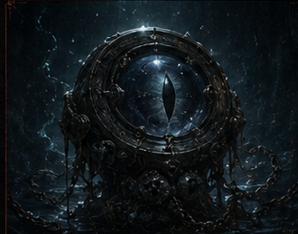
deep_eye_relic art330×259 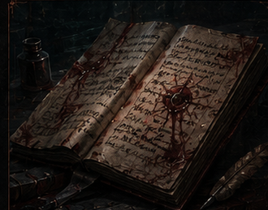
blood_ink_manuscript art330×259 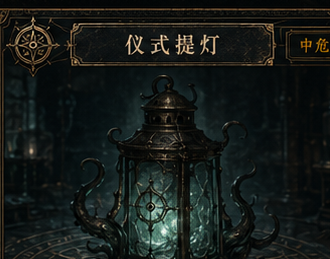
ritual_lantern art330×259 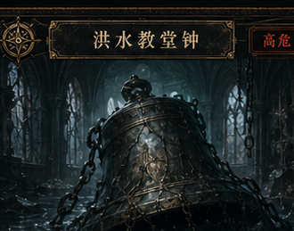
flooded_chapel_bell art330×259 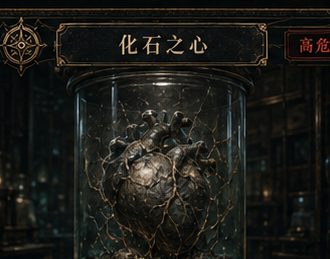
fossilized_heart art330×259 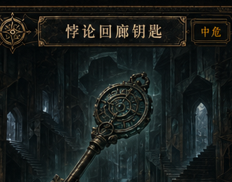
key_of_returning_corridor art330×259 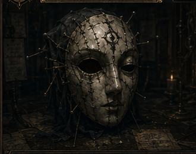
stitched_knowledge_mask art330×259 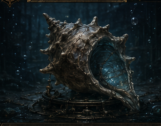
sunken_dream_conch art330×259 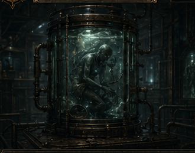
sealed_humanoid_specimen art330×259 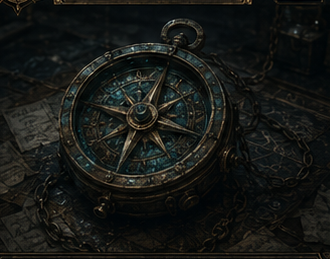
abyss_compass art330×259 character_card 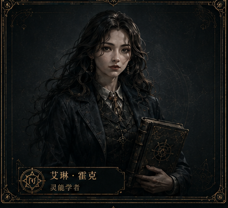
elene_hawk_spirit_scholar460×420 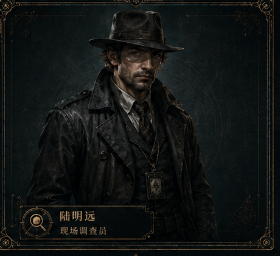
lu_mingyuan_field_agent460×420 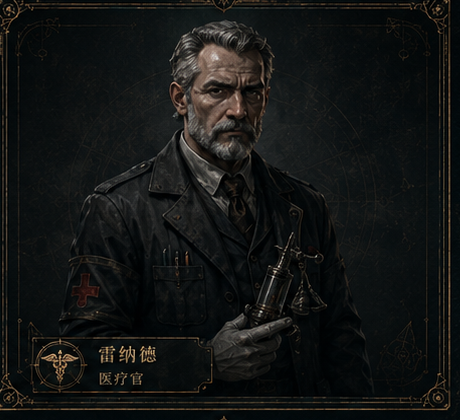
raynold_medic460×420 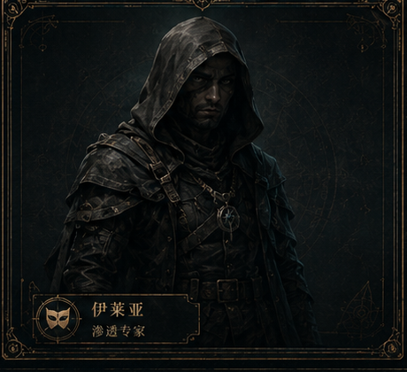
ilaya_infiltration_expert460×420 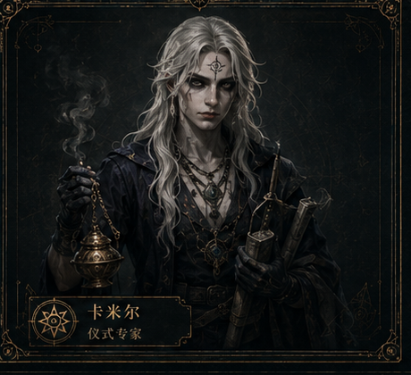
kamier_ritualist460×420 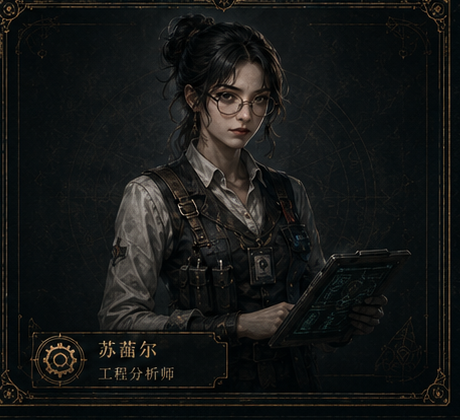
sunier_engineer460×420 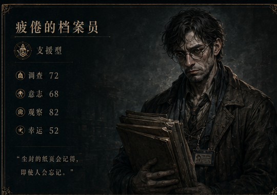
tired_archivist540×380 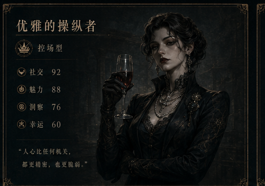
elegant_operator540×380 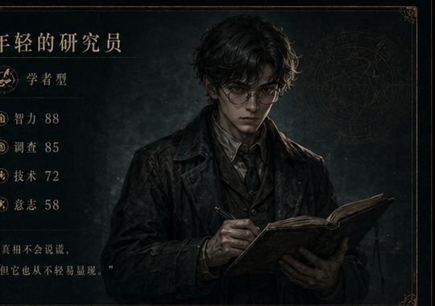
young_researcher540×380 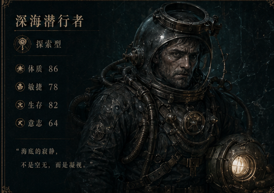
deep_sea_diver540×380 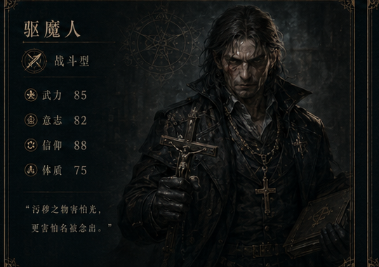
exorcist540×380 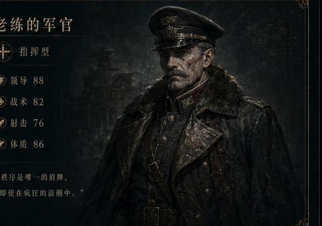
veteran_officer540×380 character_card_art 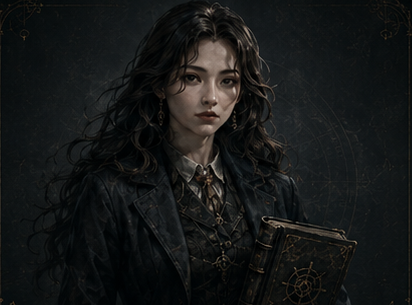
elene_hawk_spirit_scholar art412×305 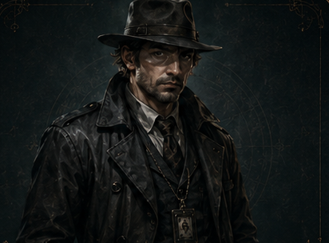
lu_mingyuan_field_agent art412×305 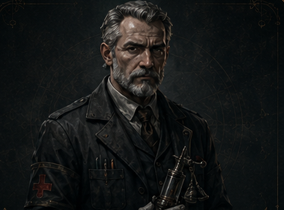
raynold_medic art412×305 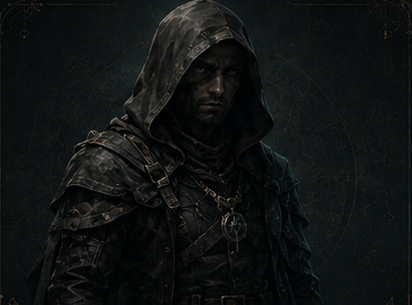
ilaya_infiltration_expert art412×305 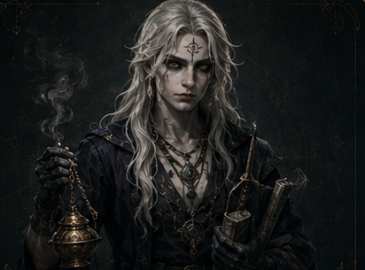
kamier_ritualist art412×305 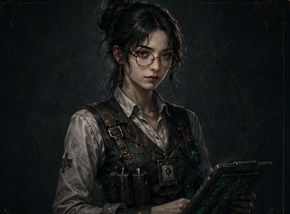
sunier_engineer art412×305 tired_archivist art345×335 elegant_operator art345×335 young_researcher art345×335 deep_sea_diver art345×335 exorcist art345×335 veteran_officer art345×335 environment_background mist_lighthouse_port532×360 archive_main_hall532×360 underground_flooded_tunnel532×360 ritual_secret_chamber532×360 deep_sea_research_dock532×360 abandoned_old_city_street532×360
icon_tile containment176×198 mission176×198 investigator176×198 anomaly176×198 research176×198 archive176×198 mail176×198 alarm176×198 settings176×198 action_power176×198 sanity176×198 pollution176×198 stability176×198 risk_level176×198 warning176×198 success176×198 failure176×198 locked176×198 unlock176×198 watcher_eye176×198 book176×198 ritual176×198 dream176×198 deep_sea176×198 time176×198 map_node176×198 route176×198 reward176×198 exp176×198 authority_rank176×198
item_tile memory_crystal155×190 pollution_sample155×190 old_coin155×190 ancient_key155×190 compass155×190 notebook155×190 injector155×190 oil_lamp155×190 seal_wax155×190 shell155×190 film_reel155×190 sample_bottle155×190 energy_crystal155×190 anomaly_eye155×190 mask155×190 bronze_bell155×190 radio155×190 pocket_watch155×190 map_fragment155×190 ritual_dagger155×190 archive_stamp155×190 access_pass155×190 identity_badge155×190 start_node155×190 branch_node155×190 combat_node155×190 event_node155×190 recovery_node155×190 boss_node155×190 retreat_node155×190
mockup login1672×941 dashboard1672×941 operation_prepare1672×941 operation_event1672×941 investigator_list1672×941 investigator_advance1672×941 anomaly_archive1672×941 containment1672×941 research_tree1672×941 operation_report1672×941
room_background standard_containment_room395×350 dream_isolation_room395×350 deep_sea_pressure_cabin395×350 medical_room395×350 research_laboratory395×350 observation_room395×350 incineration_room395×350 sealed_archive_vault395×350
svg_frame panel_frame320×180 paper_card320×180 anomaly_card_frame320×180 button_frame320×180
svg_icon containment24×24 mission24×24 investigator24×24 anomaly24×24 research24×24 archive24×24 warning24×24 sanity24×24 pollution24×24 route24×24 ritual24×24 gear24×24
texture paper256×256 dark_metal256×256 wet_stone256×256 worn_cloth256×256 vfx_tile contamination_aura300×180 dream_ripple300×180 old_god_whisper_sigil300×180 ritual_magic_circle300×180 deep_sea_water_ring300×180 warning_flare300×210 red_corruption_pulse300×210 teal_containment_pulse300×210 golden_occult_seal300×210 archive_stamp_marks300×210